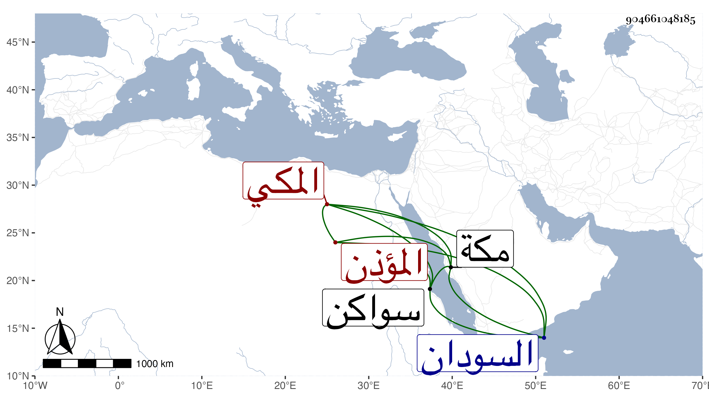

0902Sakhawi.DawLamic.ITO20230111-ara1.EIS1600.904661048185
Biography ID: 904661048185
أحمد بن عبد العزيز بن أحمد بن سالم بن ياقوت الشهاب المكي المؤذن . ولد في سنة سبع وثمانين وسبعمائة بمكة ونشأ بها وسمع على ابن صديق مسند الدارمي وأجاز له العفيف النشاوري والتنوخي والعراقي والهيثمي وطائفة وحدث سمع منه الفضلاء ، ودخل بلاد سواكن من مدة تزيد على ثلاثين سنة وسافر منها إلى بر السودان فتزوج هناك ورزق أولادا وصار يحج غالبا وربما جاور ثم انقطع عن الحج من بعد الأربعين بقليل واستمر حتى مات هناك في أوائل سنة ست وخمسين وكان خيرا ساذجا .
